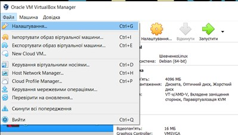
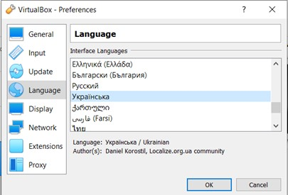
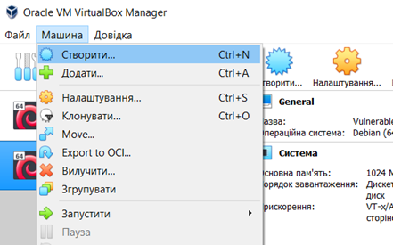
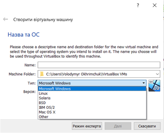
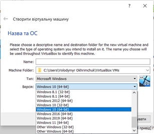
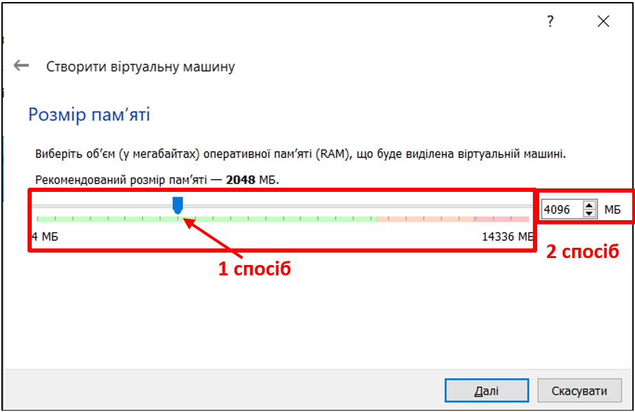
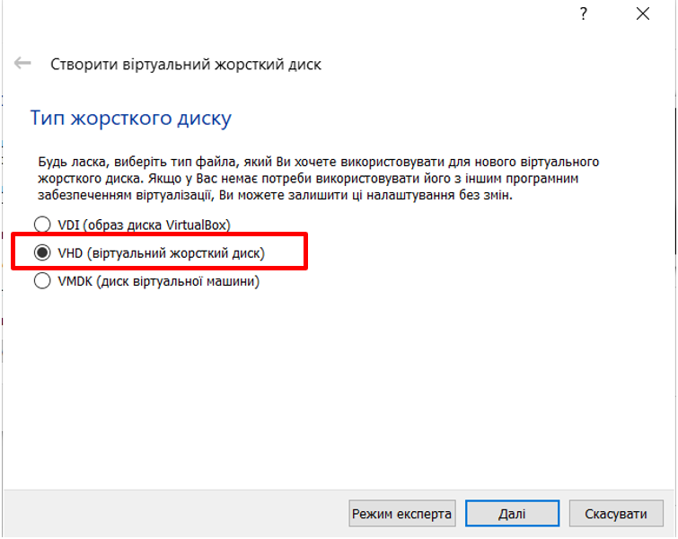
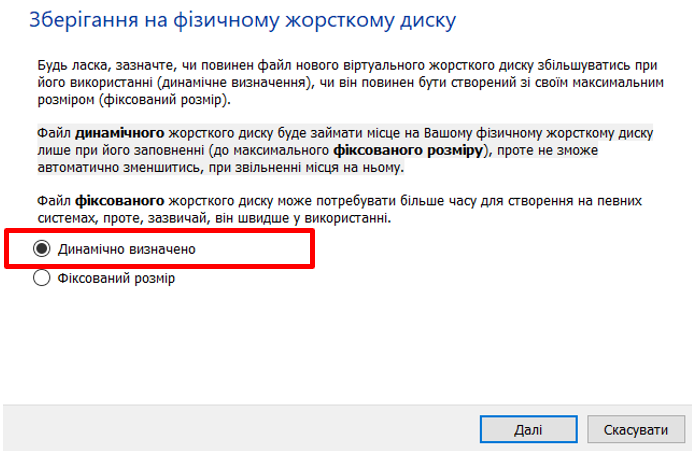
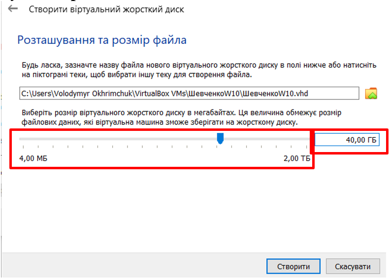

Практичне заняття № 2
ІНСТАЛЯЦІЯ ТА АДМІНІСТРУВАННЯ ОС WINDOWS
Навчальні питання
- Інсталяція ОС Windows в VirtualBox.
- Адміністрування ОС Windows. Розроблення дискреційної політики безпеки інформації
Правила техніки безпеки під час виконання завдань на занятті в класах ПК
При обробці інформації чи вирішенні задач на ПК користувач повинен:
- Одержати дозвіл на розв‘язування задачі і обробку інформації.
- Прийняти машину у відповідального ІОЦ.
- Зробити необхідні записи про початок роботи в журналі обліку роботи на ПК, а по закінченню роботи зробити відмітку про кінець роботи.
- Здати ПК відповідальному.
При роботі на ПК забороняється:
1. Підключати до ПК нештатні блоки та пристрої.
2. Застосовувати для з'єднання блоків ПК провідники з пошкодженою ізоляцією.
3. Працювати на ПК, використовуючи незареєстровані магнітні носії інформації.
4. Проводити перекомутацію з‘єднувальних кабелів при підключеному електроживленні.
Користувач несе особисту відповідальність за:
- дотримання правил експлуатації ПК;
- збереження комплекту ПК і носіїв інформації;
- дотримання правил і заходів електробезпеки на ПК.
1. Інсталяція ОС Windows в VirtualBox
Завдання 1. Інсталюйте на віртуальний ПК у VirtualBox операційну систему Windows 10
Для інсталяції ОС Windows 10 виконайте наступні дії:
-
Запустіть VirtualBox. Якщо мова інтерфейсу не українська, змініть її наступним чином:
-
У меню Файл (File) , оберіть пункт Налаштування (Preferences) (рис. 1.1) або натисніть комбінацію клавіш Ctrl+G.

Рис. 1.1 Вибір меню Налаштування
-
У вікні, що з’явиться в розділі Мова (Language, Язьік) виберіть зі списку мов інтерфейсу Українська та натисніть кнопку Ок.

Рис. 1.2 Вибір мови інтерфейсу.
-
Для створення нової віртуальної машини оберіть на панелі інструментів, або на вкладці Машина опцію Створити (рис. 1.3) або натисніть комбінацію клавіш Ctrl+N.

Рис. 1.3. Створення віртуальної машини Windows.
-
У вікні, що з’явиться (рис. 1.4) введіть у відповідне поле Name – ім’я машини (в якості імені машини використовуйте своє прізвище та додайте до нього без пробілу напис W10, як ознаку того, що це машина буде зі встановленою ОС Windows 10. Наприклад: ШевченкоW10), оберіть тип операційної системи, яку Ви хочете встановлювати (Microsoft Windows) та необхідну її версію (Windows 10 (64-bit)) та у поле Machine Folder введіть шлях до Вашої папки, де буде зберігатися створена машина. Після заповнення відповідних полів натисніть кнопку Далі.


Рис. 1.4. Створення віртуальної машини Windows 10.
-
Далі у вікні, що з’явиться за допомогою повзунка, або інших відповідних органів керування визначте об’єм оперативної пам’яті, що буде виділений для віртуальної машини. Мінімально необхідний об’єм оперативної пам’яті для Windows 10 складає 3072 Мб (рис. 1.5).

Рис. 1.5. Виділення оперативної пам’яті для віртуальної машини Windows 10.
Після встановлення необхідного об’єму оперативної пам’яті натиснути кнопку Далі.
-
Після виконання попереднього пункту на екрані з’явиться вікно створення жорсткого диску, в якому необхідно обрати опцію Створити віртуальний жорсткий диск та натиснути кнопку Створити.
-
Далі оберіть тип жорсткого диску VHD (віртуальний жорсткий диск) та натисніть кнопку Далі (див. рис. 1.6).

Рис. 1.6. Обрання типу віртуального жорсткого диску.
-
Оберіть формат зберігання даних на фізичному жорсткому диску як Динамічно визначено. (рис. 1.7)

Рис. 1.7. Обрання типу віртуального жорсткого диску.
-
На останньому етапі створення віртуального жорсткого диску у вікні, що з’явиться за допомогою повзунка або відповідного поля для вводу встановіть розмір жорсткого диску – 40 Гб (рис. 1.8). Після введення всіх параметрів натиснути кнопку Створити.

Рис. 1.8. Обрання типу віртуального жорсткого диску.
-
Після натискання кнопки Створити у вікні створення віртуального жорсткого диску, в області з віртуальними машинами в програмі VirtualBox з’явиться створена Вами віртуальна машина (рис. 1.9).

Рис. 1.9. Результат створення віртуальної машини.
Проте, для подальшої комфортної та правильної роботи зі створеною віртуальною машиною її слід доналаштувати, зокрема встановити необхідний об’єм відеопам’яті та налаштувати мережевий інтерфейс. Для цього виділіть Вашу віртуальну машину та за допомогою вкладки Машина, або панелі інструментів оберіть опцію Налаштування. Після обрання відповідної опції на екрані з’явиться вікно налаштувань віртуальної машини, в якому необхідно перейти на вкладку Екран.
За умовчанням VirtualBox виділяє 16 Мб відеопам’яті для машин, але сучасним дистрибутивам цього замало. За допомогою повзунка встановіть значення відеопам’яті 128 Мб (рис. 1.10) та натисніть кнопку Ок.

Рис. 1.10. Налаштування об’єму відеопам’яті.
Для налаштування мережевого інтерфейсу перейдіть на вкладку Мережа (Network, Сеть) та оберіть тип підключення Проміжний адаптер (Bridged Adapter, Сетевой мост) (рис. 1.11). При обранні цієї опції віртуальна машина буде в одній мережі з реальною.

Рис. 1.11. Налаштування мережевого інтерфейсу.
-
На наступному кроці необхідно завантажити образ системи, що буде інсталюватися до віртуального оптичного приводу. Для цього перейдіть на вкладку Пам'ять вікна налаштувань віртуальної машини. Далі за наведеним на рис. 1.12 порядком оберіть образ системи Windows 10.iso, що буде встановлюватись, який знаходиться папці із завданням на дане практичне заняття.

Рис. 1.12. Обрання образу віртуального оптичного приводу.
Отже, після пророблених маніпуляцій віртуальна машина готова до встановлення на неї системи.
-
Запустіть створену віртуальну машину, натиснувши на неї двічі, або за допомогою команди Запустити на панелі інструментів та у початковому вікні інсталятора за потреби (якщо система, що встановлюється надає таку можливість) Ви можете змінити мову системи, формат часу та грошових одиниць, а також розкладку клавіатури. Після пророблених змін натисніть кнопку Далі (рис. 1.13) та у вікні, що з’явиться натисніть кнопку Інсталювати зараз.

Рис. 1.13. Початкове вікно інсталятора Windows 10.
-
На наступному етапі інсталяції ОС необхідно у відповідне поле ввести ліцензійний ключ та натиснути кнопку Далі (рис. 1.14). Якщо на даному етапі інсталяції у Вас відсутній ліцензійний ключ натисніть на опцію У мене немає ключа продукту.

Рис. 1.14. Вікно введення ліцензійного ключа продукту.
-
Далі у вікні вибору ОС оберіть версію Windows 10 Pro та натисніть кнопку Далі (рис. 1.15).

Рис. 1.15. Вікно вибору версії ОС.
-
Далі ознайомтесь з ліцензією, прийміть ліцензійні умови, поставивши галочку у відповідне місце та натисніть кнопку Далі (рис. 1.16)

Рис. 1.16. Ліцензійні умови.
-
На наступному кроці із запропонованих варіантів оберіть Настроювана: інсталяція лише Windows (вибіркова) (рис 1. 17)

Рис. 1.17. Вікно обрання типу встановлення.
-
Якщо система встановлюється вперше на ПЕОМ увесь жорсткий диск буде позначено як Вільне місце диску. Це означає, що на диску відсутні будь-які розділи. Тому їх необхідно створити. Створіть 2 розділи, які в подальшому будуть дисками C і D. Для створення першого розділу, на який буде встановлена система (диск С) виділіть вільне місце на диску (див. позначка 1 рис. 1.18) та натисніть кнопку Створити (див. позначка 2 рис. 1.18). Після цього у вікні з’явитеся можливість задати розмір майбутнього диску (див. позначка 3 рис. 1.18). Встановіть розмір диску 20 Гб та натисніть кнопку Застосувати.

Рис. 1.18. Вікно створення дисків.
-
Після натискання кнопки Застосувати на екрані з’явиться повідомлення про створення додаткових розділів (рис. 1.19). Це пов’язане з тим, що починаючи з Windows 7 для коректної роботи системі необхідні додаткові службові розділи. Натисніть кнопку Ок на цьому повідомлені.

Рис. 1.19. Повідомлення про створення додаткових розділів.
-
Після створення першого розділу Ви отримаєте результат наведений на рис. 1.20.

Рис. 1.20. Вікно створення дисків.
-
Виділіть решту вільного місця на диску і аналогічно до пункту 16 створіть другий розділ (якій буде в подальшому диском D). При цьому задайте йому розмір, який дорівнює розміру вільного місця. Після створення другого диску, виділіть його та натисніть кнопку Форматування. Дочекайтеся закінчення процесу форматування.
-
Отже, в результаті розбиття диску на розділи Ви отримали наступний результат: маєте три розділи, один з яких створився автоматично (він як правило має розмір до 500 Мб в залежності від системи, що встановлюється) (рис. 1.21).
Запишіть у зошит скільки дискового простору зарезервувала операційна система.
Далі оберіть перший розділ, що був створений Вами (Диск 0 Розділ 2). На нього буде встановлено операційну систему. Натисніть кнопку Форматування та після закінчення процесу форматування натисніть кнопку Далі.

Рис. 1.21. Результат розбиття диску на розділи.
-
Далі розпочнеться процес встановлення операційної системи (рис. 1.22). Після закінчення встановлення операційної системи інсталятор запропонує Вам перезавантажити комп’ютер, або через певний час перезавантажить його автоматично.

Рис. 1.22. Процес встановлення операційної системи.
-
Після перезавантаження відбуватиметься заключна серія налаштувань Windows 10 та налаштувань персоналізації. Оберіть із запропонованих списків регіон, в якому використовується операційна система, та розкладку клавіатури (рис. 1.23).

Рис. 1.23. Вікна введення вибору регіону та розкладки клавіатури.
-
Далі Ви можете, за необхідності, додати інші розкладки клавіатури. Якщо додаткової мови розкладки Вам не потрібно натисніть кнопку Пропустити.
-
Після попередніх налаштувань мережі оберіть спосіб налаштування системи як Налаштування для особистого використання (рис. 1.24) та натисніть кнопку Далі.

Рис. 1.24. Вікно вибору способу налаштування.
-
Після обрання способу налаштування системи відбувається створення облікового запису. Даний обліковий запис буде мати права Адміністратора системи. Для створення у відповідні поля введіть ім’я користувача (бажано вводити його латинськими літерами) та пароль до облікового запису (рис. 1.25). У результаті цих операцій операційна система буде запущена та готова до подальшого використання.

Рис. 1.25. Вікна введення ім’я користувача та паролю.
-
Після створення облікового запису необхідно налаштувати конфіденційність для Вашого пристрою. Для цього у всіх опціях налаштувань необхідно повзунок із положення Так перевести у положення Ні та натиснути кнопку Прийняти (рис. 1.26).

Рис. 1.26. Вікно налаштування конфіденційності для пристрою.
-
По закінченню налаштування конфіденційності Вам буде запропоновано обрати усі планові способи використання пристрою, щоб отримувати персоналізовані підказки, рекламу та рекомендації під час налаштування пристрою та роботи (рис. 1.27). На даному етапі рекомендовано натиснути кнопку Пропустити.

Рис. 1.27. Вікно налаштування конфіденційності для пристрою.
2. Адміністрування ОС Windows. Розроблення дискреційної політики безпеки інформації.
Після інсталяції системи адміністратор безпеки приступає до її адміністрування. З метою захисту операційної системи та даних, які є на комп’ютері від деструктивного впливу користувачів (шкідливе програмне забезпечення, НСД, тощо) КАТЕГОРИЧНО ЗАБОРОНЕНО будь кому, включно із адміністратором безпеки, використовувати для роботи обліковий запис із групи Адміністратори.
Тому на першому етапі адміністрування операційної системи відбувається створення облікових записів користувачів. За замовчуванням облікові записи, що створюються після інсталяції операційної системи належать до групи Користувачі.
Завдання 2. Створити новий обліковий запис за допомогою меню “Параметри”
Для створення нового користувача ОС Windows 10 виконайте наступні дії:
-
Запустіть у VirtualBox свою ОС Windows 10 та у меню Пуск виберіть пінтограму Налаштування або натисніть комбінацію клавіш  + I, щоб відкрити вікно Налаштування Windows, і перейдіть до пункту Облікові записи.(рис. 2.1).
+ I, щоб відкрити вікно Налаштування Windows, і перейдіть до пункту Облікові записи.(рис. 2.1).

Рис. 2.1. Вікно налаштування конфіденційності для пристрою.
-
У вікні, що з’явиться (рис. 2.2) виберіть пункт меню Родина та інші користувачі в бічному меню.

Рис. 2.2. Меню “Облікові записи” Windows 10.
-
Далі натисніть на елемент Додати когось іншого на цей комп'ютер (рис. 2.3).

Рис. 2.3. Створення нового користувача Windows 10.
-
Після виконання попереднього пункту на екрані може з’явитися інтерфейс додавання нових облікових записів Microsoft у системі Windows. Якщо у Вас немає облікового запису Microsoft або відсутній доступ до мережі Інтернет то необхідно обрати пункт У мене немає облікових даних цієї особи (рис. 2.4).

Рис. 2.4. Вибір способу входу у систему.
-
Так як ми створюємо локального користувача на окремому ПЕОМ тому оберіть пункт Додати користувача без облікового запису Microsoft (рис. 2.5).

Рис. 2.5. Вікно створення облікового запису Microsoft.
-
Далі у вікні створення облікових записів у відповідні поля введіть ім'я (логін) та пароль для входу користувача у систему (рис. 2.6) (В деяких версіях ОС крім пароля ще необхідно ввести контрольні питання та відповіді на них для відновлення пароля).
Рис. 2.6. Створення користувача.
Обліковий запис нового зареєстрованого користувача автоматично додається в ОС Windows. Переглянути облікові записи користувачів можна у вкладці Родина та інші користувачі (рис. 2.3).
-
Для завершення створення та активації облікового запису необхідно до нього перейти. Для цього у меню Пуск наведіть курсор на піктограму облікового запису, при цьому з’явиться ім’я облікового запису, під яким Ви знаходитися в системі. Після натискання на зазначене ім’я з’явиться список інших облікових записів. Оберіть новостворений обліковий запис (рис. 2.7).

Рис. 2.7. Перехід до іншого облікового запису.
-
Після успішного переходу до облікового запису новоствореного користувача поверніться до Вашого обліково запису (облікового запису Адміністратора).
Завдання 3. Створити ще один новий обліковий запис за допомогою меню “Управління комп’ютером”
Для створення нового користувача ОС Windows 10 виконайте наступні дії:
-
Натисніть правою кнопки миші на меню Пуск та у вікні, що з’явиться оберіть пункт Керування комп’ютером (рис. 2.8).

Рис. 2.8. Доступ до меню Керування комп’ютером.
-
У вікні, що з’явиться (рис. 2.9) виберіть пункт меню Local Users and Groups (Локальні користувачі) (позначка 1) та оберіть подвійним натисканням лівої кнопки миші пункт Users (Користувачі) (позначка 2)

Рис. 2.9. Доступ до меню Керування комп’ютером.
-
Після переходу на вкладку користувачі перед Вами з’явиться вікно, в якому будуть відображені всі облікові записати, які зареєстровані в системі. (рис. 2.10).
Запишіть у зошит імена всіх облікових записів, що є в системі.
Для створення нового облікового запису натисніть правою кнопкою миші на порожній області в центральній частині та у контекстному вікні, що з’явиться, оберіть пункт New User (Новий користувач)

Рис. 2.10. Створення нового користувача Windows 10.
-
Далі, у вікні Новий користувач для завершення процесу створення нового користувача заповніть відповідні поля вводу, при цьому обов’язковими для заповнення є поля User name (Користувач), Password (Пароль) та Confirm password (Підтвердження пароля).
Крім того Ви можете обрати для нової облікового запису наступні опції (рис. 2.11):
- Вимагати зміни паролю при наступному вході користувача в систему.
- Заборонити зміну паролю користувачем.
- Зняти обмеження на строк дії пароля або взагалі Відключити обліковий запис.
Після заповнення необхідних полів введення натисніть кнопку Create.

Рис. 2.11. Вікно Новий користувач.
-
Кожен новий користувач, що створюється автоматично заноситься до групи Користувачів, тобто має обмежені можливості. Для того, щоб переглянути до якої групи належить обліковий запис користувача, або змінити цю групу необхідно у вікні управління користувачами обрати обліковий запис, що вас цікавить та натиснути праву кнопку миші. У контекстному меню, що з’явиться оберіть пункт Властивості (рис. 2.12).

Рис. 2.12. Вікно Новий користувач.
-
Далі у вікні Властивостей облікового запису (рис. 2.13) перейдіть на вкладку Member of (Членство в групах) та перегляньте, до якої групи належить створений Вами обліковий запис.

Рис. 2.13. Властивості облікового запису користувача.
-
Для завершення та активації стовреного облікового запису перейдіть до нього та поверніться назад до Вашого облікового запису.
Завдання 4. Створити ще один новий обліковий запис за допомогою Командного рядка
Для створення нового користувача ОС Windows 10 за допомогою Командного рядка виконайте наступні дії:
-
Запустіть Командний рядок від імені Адміністратора (меню Пуск → Службові Windows → Командний рядок → права кнопка миші → Додатково → запуск від імені адміністратора) (рис. 2.14).

Рис. 2.14. Властивості облікового запису користувача.
-
В командному рядку введіть команду:
net user UserName /add ,
де UserName – ім’я облікового запису, що створюється.
-
Для встановлення паролю на щойно створений обліковий запис введіть команду:
net user UserName *
а потім введіть два рази пароль, що хочете задати (рис. 2.15).

Рис. 2.15. Встановлення паролю на обліковий запис.
-
Для перегляду відомостей про всіх користувачів, що є в системі за допомогою Командного рядка виконайте в ньому наступну команду:
wmic useraccount list full
Після виконання команди на екрані ви отримаєте список всіх існуючих облікових записів системи (рис. 2.16).

Рис. 2.16. Результат виконання команди wmic.
В результаті виконання команди Ви отримаєте деталізований список всіх облікових записів, що є в системі. Ви можете бачити Name (ім’я) та Full name (повне ім’я) облікового запису користувача а також додаткову інформацію, наприклад:
AccountType. Якщо ви знаходитесь на комп’ютері, який не є частиною домену, тобто здебільшого це окремий комп’ютер – ви завжди бачите тип облікового запису 512. Якщо комп’ютер є частиною домену ці значення будуть інші.
Description. Це значення відображає опис облікового запису, якщо він був введений.
Disable. Це вказує, чи активний обліковий запис користувача або відключений. Якщо для цього параметра встановлено значення False, обліковий запис активний.
Domain. Це вказує на ім'я домену, частиною якого є комп'ютер. Якщо комп’ютер не є частиною домену, ви побачите призначене ім’я, яке починається з типу комп’ютера.
InstallDate. На доменах це значення буде показувати дату створення облікового запису користувача.
LocalAccount. Це значення вказує, чи існує обліковий запис на локальному комп'ютері або на домені сервера, якщо комп'ютер підключений до домену.
Lockout. Це значення показує, чи заблокований даний момент обліковий запис користувача, що може статися, якщо параметри безпеки заблокують облікові записи після кількох невдалих спроб введення пароля.
PasswordChangeable, PasswordExpires та PasswordRequired. Вони представляють параметри безпеки для паролів, які можуть бути встановлені для облікового запису записи користувача.
SID. Це значення відображає ідентифікатор безпеки для облікового запису.
SIDType. Це числове значення, яке відображає тип SID, який використовується для облікового запису. Можуть бути наступні значення типу: 1 – для облікового запису користувача, 2 – для облікового запису групи та 3 - для облікового запису домену.
Status. Це поточний статус облікового запису користувача. Якщо обліковий запис працює, Ви можете спостерігати записи «OK» або «Degraded», що означає лише обліковий запис, який використовується звичайними користувачами для входу в систему.
Запишіть у зошит деталізований опис Вашого облікового запису та деталізований опис будь-якого неактивного облікового запису.
-
Перейдіть до новоствореного облікового запису та поверніться назад до Вашого облікового запису.
Після створення облікових записів користувачів з метою унеможливлення НСД до їх інформації адміністратор безпеки приступає до розмежування доступу.
Завдання 5. Обмежте користувачам доступ до чужих папок
Для виконання цього завдання на диску D Вашої віртуальної системи створіть 3 (три) папки, при цьому кожна папка повинна називатися одним із імен облікових записів, що Ви створили. Наприклад, якщо Ви створили три облікові записи з іменами User1, User2 та User3 то Ваші створені папки повинні мати відповідні імена User1, User2 та User3. (рис. 2.16).

Рис. 2.17. Результат створення папок користувачів.
Суть завдання полягає в тому, щоб розмежувати доступ таким чином, щоб кожен користувач мав доступ виключно до своєї папки, а до папок інших користувачів доступу не мав.
Для обмеження доступу користувачів User2 та User3 до папки користувача User1 виконайте наступні дії:
-
Виділіть папку користувача User1 на яку Ви будете встановлювати заборону на доступ користувачам User2 та User3, натисніть праву кнопку миші та у контекстному меню оберіть пункт Властивості.
-
У вікні, що з’явиться, перейдіть на вкладку Безпека” та для зміни прав доступу натисніть кнопку Змінити (рис. 2.18).

Рис. 2.18. Вікно властивостей папки.
-
Як Ви бачите у вікні, що з’явилось є можливість змінювати дозволи на дію для обраного об’єкту (рис. 2.19 позначка 1). Для зміни дозволів необхідно у полі Групи або користувачі (рис. 2.19 позначка 2) обрати необхідного користувача чи групу користувачів та проставити для них навпроти кожного дозволу галочку у полі Дозволити чи Заборонити (рис. 2.19 позначка 1).
Проте у полі Групи або користувачі (рис. 2.19 позначка 2) відсутні імена облікових записів, для яких потрібно змінити відповідні дозволи. Тому їх необхідно додати до цього поля. Для цього у цьому вікні натисніть кнопку Додати.

Рис. 2.19. Вікно встановлення дозволів.
-
У вікні, що з’явиться необхідно натиснути кнопку Додатково (рис. 2.20)

Рис. 2.20. Вікно встановлення дозволів.
-
У наступному вікні натисніть кнопку Пошук, для пошуку необхідних облікових записів. В результатах пошуку оберіть необхідні облікові записати. Для обрання декількох записів одночасно натисніть на них із затиснутою клавішою Ctrl. Після обрання необхідних облікових записів натисніть кнопку Ок. (рис. 2.21).

Рис. 2.21. Вікно пошуку користувачів або груп.
-
Після додавання необхідних користувачів у наступному вікні натисніть кнопку Ок (Рис. 2.22).

Рис. 2.22. Вікно пошуку користувачів або груп.
-
Далі, почергово, оберіть обліковий запис User1 та у полі надання дозволів навпроти Повний доступ поставити галочку у віконці Дозволити, а для користувачів User2 та User3 для Повного доступу поставити галочку у віконці Заборонити і тільки після цього натиснути кнопку Ок. (рис. 2.23)

Рис. 2.23. Встановлення дозволів та заборон для користувачів або груп.
Отже, після пророблених маніпуляцій Ви налаштували доступ до папки User1 таким чином, що доступ до неї має виключно User1 та адміністратор, а решта користувачів (User2 та User3) не можуть зайти до цієї папки.
-
Аналогічним чином налаштуйте розмежування доступу до папок User2 та User3.
-
Для перевірки правильності налаштування розмежування доступу зайдіть в систему, наприклад під користувачем User2 та спробуйте отримати доступ до папки користувача User1. Якщо всі налаштування були зроблені правильно Ви отримаєте інформаційне повідомлення про заборону доступу.
Запишіть у зошит інформацію, яка була відображена в інформаційному повідомленні.
Завдання 6. Здійсніть налаштування функцій безпеки за допомогою оснастки Редактор локальної групової політики.
-
Для виклику Редактору локальної групової політики натисніть комбінацію клавіш +R та у вікні, що з’явиться введіть команду:
gpedit.msc
В результаті виконання цієї команди з’явиться вікно Редактор локальної групової політики (рис. 2.24)

Рис. 2.24. Редактор локальної групової політики.
Всі подальші налаштування будуть здійснюватися в ньому.
-
Налаштуйте політику паролів
Параметри політики паролів служать для визначення рівня складності і тривалості використання паролів.
Параметри безпеки встановлюються за адресою:
Політика Локальний комп’ютер → Конфігурація комп’ютера → Налаштування Windows → Security Settings (Параметри безпеки) → Account Policies (Політики облікових записів) → Password Policy (Політика паролів)”.
Встановіть значення параметрів безпеки, які наведені в табл.2.1:
Таблиця 2.1
| № п/п |
Назва параметра |
Значення параметра |
| 1 |
Enforce password history (Примусове збереження історії паролів(кількість паролів, які повинні не повторюються)) |
12 збережених паролів (12 passwords remembered) |
| 2 |
Maximum password age (Максимальний строк дії паролю) |
42 дня (42 days) |
| 3 |
Minimum password age (Мінимальний строк дії паролю) |
10 день (10 days) |
| 4 |
Minimum password lengths (Мінімальна довжина паролю) |
8 символов |
| 5 |
Password must meet complexity requirements (Пароль повинен відповідати вимогам складності) |
Увімкнено (Enabled) |
| 6 |
Store password using reversible encryption for all users in the domain (Зберігати паролі, використовуючи оборотне шифрування) |
Вимкнено (Disabled) |
-
Налаштуйте політику блокування облікового запису
Політика блокування облікового запису використовується для блокування облікового запису, якщо протягом заданого проміжку часу реєструється визначена кількість невдалих спроб входу до системи. Кількість спроб і інтервал часу встановлюються за допомогою параметрів політики облікового запису.
Параметри безпеки встановлюються за адресою:
Політика Локальний комп’ютер → Конфігурація комп’ютера → Налаштування Windows → Security Settings (Параметри безпеки) → Account Policies (Політики облікових записів) → Account Lockout Policy (Політика блокування облікових записів).
Встановіть значення параметрів безпеки, які наведені в табл 2.2:
Таблиця 2.2
| № п/п |
Назва параметра |
Значення параметра |
| 1 |
Account lockout threshold (Порогове значення блокування) |
5 помилок входу в систему (5 invalid logon attempts) |
| 2 |
Account lockout duration (Тривалість блокування облікового запису) |
30 хвилин (30 minutes) |
| 3 |
Reset account lockout counter after (Скинути лічильник блокувань облікового запису після) |
30 хвилин (30 minutes) |
-
Налаштуйте політику аудиту
За допомогою політики аудиту визначаються події безпеки, які заносяться в журнал реєстрації. Адміністратор безпеки отримує можливість слідкувати за діями, які мають відношення до безпеки, наприклад доступом до об’єктів, входом (виходом) з системи.
Параметри безпеки встановлюються за адресою:
Політика Локальний комп’ютер → Конфігурація комп’ютера → Налаштування Windows → Security Settings (Параметри безпеки) → Local Policies (Локальні політики) → Audit Policy (Політика аудита).
Встановіть значення параметрів безпеки наведені в табл. 2.3:
Таблиця 2.3
| № п/п |
Назва параметра |
Значення параметра |
| 1 |
Audit account logon events (Аудит подій входу в обліковий запис) |
Успіх, Відмова (Success, Failure) |
| 2 |
Audit account management (Аудит управління обліковим записом) |
Успіх, Відмова (Success, Failure) |
| 4 |
Audit logon events (Аудит подій входу в систему) |
Успіх, Відмова (Success, Failure) |
| 5 |
Audit object access (Аудит доступу до об'єкту) |
Успіх, Відмова (Success, Failure) |
| 6 |
Audit policy change (Аудит зміни політики) |
Успіх (Success) |
| 7 |
Audit privilege use (Аудит використання прівілеїв) |
Відмова (Failure) |
| 8 |
Audit process traking (Аудит відслідковування процесів) |
Успіх, Відмова (Success, Failure) |
| 9 |
Audit system events (Аудит системних подій) |
Успіх, Відмова (Success, Failure) |
-
Налаштуйте параметри призначення прав користувачів
Параметри призначення прав користувачів дають змогу призначати привілеї користувачам і групам.
Параметри безпеки встановлюються за адресою:
Політика Локальний комп’ютер → Конфігурація комп’ютера → Налаштування Windows → Security Settings (Параметри безпеки) → Local Policies (Локальні політики) → User Rights Assignment (Призначення прав користувача).
При налаштуванні параметрів безпеки локального об’єкта групової політики типової АС класу 1, значення “Ніхто” (No One) визначає, що ніякому користувачу не надаються відповідні привілеї. Значення задаються в редакторі “Локальна політика безпеки” шляхом видалення всіх користувачів зі списку відповідного параметра.
Встановіть значення параметрів безпеки, які наведені в табл. 2.4.
Таблиця 2.4
| № п/п |
Назва параметра |
Значення параметра |
| 1 |
Adjust memory quotas to a process (Налаштування квот пам'яті для процесу) |
Адміністратори (Administrators), LOCAL SERVICE |
| 2 |
Allow log on through Remote Desktop Services (Дозволити вхід через служби віддаленого робочого стола) |
Ніхто (видалити усі записи) |
| 3 |
Back up files and directories (Резервне копіювання файлів і каталогів) |
Адміністратори (Administrators) |
| 4 |
Bypass traverse checking (Перевірка обхідного ходу) |
Адміністратори, Користувачі (Administrators, Users) |
| 5 |
Change the system time (Зміна системного часу) |
Адміністратори (Administrators) |
| 6 |
Change the time zone (Зміна часового поясу) |
Адміністратори (Administrators) |
| 7 |
Debug programs (Відладка програм) |
Ніхто (видалити усі записи) |
| 8 |
Deny access to this computer from the network (Відмова у доступі до комп’ютера з мережі) |
Всі, анонімний вхід (Everyone, ANONYOMUS LOGON) |
| 9 |
Deny log on through Remote Desktop Services (Заборонити вхід через служби віддаленого робочого стола) |
Всі, анонімний вхід (Everyone, ANONYOMUS LOGON) |
| 10 |
Force shutdown from a remote system (Примусове завершення роботи з віддаленої системи) |
Ніхто (видалити усі записи) |
| 11 |
Generate security audits (Створення аудитів безпеки) |
LOCAL SERVICE |
| 12 |
Increase scheduling priority (Підвищити пріоритет планування) |
Адміністратори (Administrators) |
| 13 |
Load and unload device drivers (Завантаження та вивантаження драйверів пристроїв) |
Адміністратори (Administrators) |
| 14 |
Perform volume maintence tasks (Виконання завдання з обслуговування обсягу) |
Адміністратори (Administrators) |
| 15 |
Profile system performance (Зміна профілю продуктивності системи) |
Адміністратори (Administrators) |
| 16 |
Replace a process level token (Заміна маркеру рівня процесу) |
LOCAL SERVICE |
| 17 |
Restore files and directories (Відновлення файлів і каталогів) |
Адміністратори (Administrators) |
| 18 |
Shut down the system (Завершення роботи системи) |
Адміністратори, Користувачі (Administrators, Users) |
-
Налаштуйте параметри безпеки
Параметри безпеки дають змогу задіяти або відмінити ряд функцій наприклад, цифровий підпис даних, ім’я облікових записів адміністратора і гостя, доступ до НГМД та компакт-дисків, інсталяцію драйверів, повідомлення при вході в систему і т. ін.
Параметри безпеки встановлюються за адресою:
Політика Локальний комп’ютер → Конфігурація комп’ютера → Налаштування Windows → Security Settings (Параметри безпеки) → Local Policies (Локальні політики) → Security Options (Параметри безпеки)”.
При налаштуванні даної групи параметрів безпеки, значення Не визначено (Not defined) визначає, що даний параметр не підлягає налаштуванню адміністратором безпеки.
Встановіть параметри безпеки відповідно до табл. 2.5.
Таблиця 2.5
| № п/п |
Назва параметра |
Значення параметра |
| 1 |
Accounts: Rename administrator account (Облікові записи: перейменуйте обліковий запис адміністратора) |
Змініть назву облікового запису на довільну (використовуйте латинські літери) |
| 2 |
Accounts: Rename guest account (Облікові записи: перейменуйте обліковий запис гостя) |
Змініть назву облікового запису на довільну (використовуйте латинські літери) |
| 3 |
Audit: Audit the access of global system objects (Аудит: Аудит доступу до глобальних системних об’єктів) |
Увімкнено (Enabled) |
| 4 |
Audit: Audit the use of Backup and Restore privelege (Аудит: Аудит використання привілеїв резервного копіювання та відновлення) |
Увімкнено (Enabled) |
| 5 |
Devices: Allow undock without having to log on (Пристрої: дозволити від’єднання без входу в систему) |
Вимкнено (Disabled) |
| 6 |
Devices: Allowed to format and eject removable media (Пристрої: дозволено форматувати та витягувати знімні носії) |
Администратори (Administrators) |
| 7 |
Devices: Prevent users from installing printer drivers when connecting to shared printers (Пристрої: заборонити користувачам встановлювати драйвери принтера під час підключення до спільних принтерів) |
Увімкнено (Enabled) |
| 8 |
Devices: Restrict CD-ROM access to locally logged-on user only (Пристрої: обмежте доступ до CD-ROM лише користувачам, які ввійшли в систему) |
Вимкнено (Disabled) |
| 9 |
Devices: Restrict floppy access to locally logged-on user only (Пристрої: обмежте доступ до дискети лише користувачам, які ввійшли в систему) |
Вимкнено (Disabled) |
| 10 |
Domain member: Maximum machine account password age (Член домену: максимальний вік пароля облікового запису машини) |
42 дня |
| 11 |
Interactive logon: Do not require CTRL+ALT+DEL (Інтерактивний вхід: не вимагати натискання CTRL+ALT+DEL) |
Вимкнено (Disabled) |
| 12 |
Interactive logon: Don't display last signed-in (Інтерактивний вхід: не відображати останній вхід) |
Увімкнено (Enabled) |
| 13 |
Interactive logon: Message text for users attempting to log on (Інтерактивний вхід: текст повідомлення для користувачів, які намагаються увійти) |
Вхід тільки для авторизованих користувачів. Особи, які здійснюють спроби несанкціонованого доступу, переслідуватимуться згідно із законом |
| 14 |
Interactive logon: Message title for users attempting to logon (Інтерактивний вхід: заголовок повідомлення для користувачів, які намагаються увійти) |
ПРОДОВЖЕННЯ СПРОБ БЕЗ НАЛЕЖНОЇ АВТОРИЗАЦІЇ Є ЗЛОЧИНОМ |
| 15 |
Interactive logon: Number of previous logons to cache (in case domain controller is not available) (Інтерактивний вхід: кількість попередніх входів у кеш (якщо контролер домену недоступний)) |
0 входів в систему |
| 16 |
Interactive logon: Prompt user to change password before expiration (Інтерактивний вхід: запропонувати користувачу змінити пароль до закінчення терміну дії) |
7 дней (7 days) |
| 17 |
Interactive logon: Smart card removal behavior (Інтерактивний вхід: поведінка видалення смарт-картки) |
Блокування комп’ютера (Lock Workstation) |
| 18 |
Microsoft network server: Amount of idle time required before suspending session (Сервер мережі Microsoft: час простою, необхідний перед призупиненням сеансу) |
0 хв. |
| 19 |
Network access:Do not allow anonymous enumeration of SAM accounts and shares (Доступ до мережі: не дозволяти анонімне перерахування облікових записів SAM і спільних ресурсів) |
Увімкнено (Enabled) |
| 20 |
Shutdown: Allow system to be shutdown without having to logon (Вимкнення: дозволити систему вимкнути без входу в систему) |
Вимкнено (Disabled) |
| 21 |
Shutdown: Clear virtual memory pagefile (Вимкнення: очистити файл сторінки віртуальної пам'яті) |
Увімкнено (Enabled) |
-
Налаштуйте параметри безпеки у вузлі “Політика Локальний комп’ютер\ Конфігурація комп’ютера \ Адміністративні шаблони ”
Параметри безпеки встановлюються за адресою:
Політика Локальний комп’ютер → Конфігурація комп’ютера → Administrative Templates (Адміністративні шаблони)→”
Встановіть значення параметрів безпеки, які наведені в табл. 2.6.
Таблиця 2.6
| № п/п |
Назва гілки у вузлі “Administrative Templates” |
Назва параметра |
Значення параметра |
| 1 |
System/ Disk Quotas |
Enforce disk quotas (Увімкнути дискові квоти) |
Увімкнено (Enabled) |
| 2 |
System/ Disk Quotas |
Enforce disk quota limit (Забезпечити дотримання дискової квоти) |
Увімкнено (Enabled) |
| 3 |
System/ Disk Quotas |
Specify default quota limit and warning level (Визначити квоту та поріг попередження за замовчуванням) |
Увімкнено (Enabled) |
| 4 |
System/ Disk Quotas |
Log event when quota limit exceeded (Записати до журналу подію при перевищені квоти) |
Увімкнено (Enabled) |
| 5 |
System/ Disk Quotas |
Log event when quota warning level exceeded (Заносити подію, що перевищує рівень попередження квоти) |
Увімкнено (Enabled) |
| 6 |
System / Logon |
Dоn’t display the Getting Started welcome screen at logon (Не відображайте екран привітання «Початок роботи» під час входу) |
Увімкнено (Enabled) |
| 7 |
System / Logon |
Do not process the legacy run list (Не обробляйте список запуску застарілиx версій) |
Увімкнено (Enabled) |
| 8 |
System / Logon |
Do not process the run once list (Не обробляти список єдиноразово запущених програм) |
Увімкнено (Enabled) |
| 9 |
Windows Components/ Windows Installer |
Prohibit rollback (Заборонити відкат) |
Вимкнено (Disabled) |
-
Встановіть параметри безпеки у вузлі “Политика Локальный компьютер\ Конфигурация пользователя\ Административные шаблоны”
Параметри безпеки встановлюються за адресою:
Політика Локальний комп’ютер → Конфігурація користувачів → Administrative Templates (Адміністративні шаблони)→
Встановіть значення параметрів безпеки, які наведені в табл. 2.7.
Таблиця 2.7
| № п/п |
Назва гілки у вузлі “Administrative Templates ” |
Назва параметра |
Значення параметра |
| 1 |
Control Panel/ Personalization |
Enable Screen Saver (Увімкнення заставки) |
Увімкнено (Enabled) |
| 2 |
Control Panel/ Personalization |
Password protect the screen saver (Захист заставки за допомогою пароля) |
Увімкнено (Enabled) |
| 3 |
Control Panel/ Personalization |
Prevent changing color scheme (Заборона зміни кольорової схеми) |
Увімкнено (Enabled) |
| 4 |
Control Panel/ Personalization |
Prevent changing desktop background (Заборона зміни шпалерів Windows) |
Увімкнено (Enabled) |
| 5 |
Control Panel/ Personalization |
Screen Saver timeout (Таймаут екранної заставки) |
Увімкнено (Enabled) 600 секунд |
| 6 |
System |
Prevent access to registry editing tools (Заборонити доступ до засобів редагування реєстру) |
Увімкнено (Enabled) |
| 7 |
System/Ctrl+Alt+Del Options |
Remove Task Manager (Видалити диспетчер задач) |
Увімкнено (Enabled) |
| 8 |
System/Power Management |
Prompt for password on resume from hibernate or suspend (Запитувати пароль при виході з режиму гібернації, спячого або режиму очікування) |
Включен (Enabled) |
| 9 |
Windows Components/ Attachment Manager |
Do not preserve zone information in file attachments (Не зберігати відомості про зону у вкладених файлах) |
Вимкнено (Disabled) |
| 10 |
Windows Components/ Attachment Manager |
Hide mechanisms to remove zone information (Приховати механізм видалення відомостей про зону) |
Увімкнено (Enabled) |
| 11 |
Windows Components/ Attachment Manager |
Notify antivirus programs when opening attachments (Повідомляти антивірусні програми під час відкриття вкладень) |
Увімкнено (Enabled) |
| 12 |
Windows Components/ File Explorer |
Remove CD Burning Features (Видалити можливість запису компакт-дисків) |
Увімкнено (Enabled) |
| 13 |
Windows Components/ File Explorer |
Remove Security Tab (Видалити вкладку “Безпека”) |
Увімкнено (Enabled) |
Важливо. Надання параметру Видалити вкладку Безпека значення “Увімкнено” не дає можливості адміністратору та користувачам ПК виконувати налаштування параметрів безпеки об’єктів файлової системи за рахунок приховання вкладки “Безпека” у вікні “Властивості”. При необхідності виконання адміністратором ПК налаштування параметрів безпеки об’єктів файлової системи (наприклад при створені облікового запису користувача) необхідно задати для даного параметра значення “Вимкнено”. Після закінчення налаштування параметрів безпеки об’єктів файлової системи необхідно повернути значення для параметра “Видалити вкладку Безпека” “Увімкнено”
Надання параметру “Заборонити доступ до засобів редагування реєстру” значення “Увімкнено” не дає можливості адміністратору та користувачам ПК виконувати налаштування параметрів системного реєстру ОС Windows з використанням засобу адміністрування “Редактор реєстру”. При необхідності використання адміністратором безпеки засобу адміністрування системного реєстру ОС Windows потрібно встановити для даного параметра значення “Вимкнено”, а після закінчення робіт встановити значення “Увімкнено”.
Критерії оцінювання курсантів в балах національної шкали за практичне заняття
| Вид діяльності |
Оцінка за національною шкалою |
|
|
|
|
"2" |
"3" |
"4" |
"5" |
| Тест |
0 – 0,2 |
0,3 – 0,4 |
0,5 – 0,6 |
0,7 |
Практичні завдання |
<3 завдання |
3 завдання |
4-5 завдання |
6 завдання |
|
0 – 0,3 |
0,4 – 0,5 |
0,6 – 0,7 |
0,8 |
| Всього |
0 – 0,6 |
0,7 – 0,9 |
1,0 – 1,3 |
1,4 – 1,5 |
Висновок. У ході проведення заняття курсанти вивчили можливості програмного забезпечення емуляції роботи робочих станцій VirtualBox, набули практичних навичок інсталяції ОС Windows та її адміністрування.